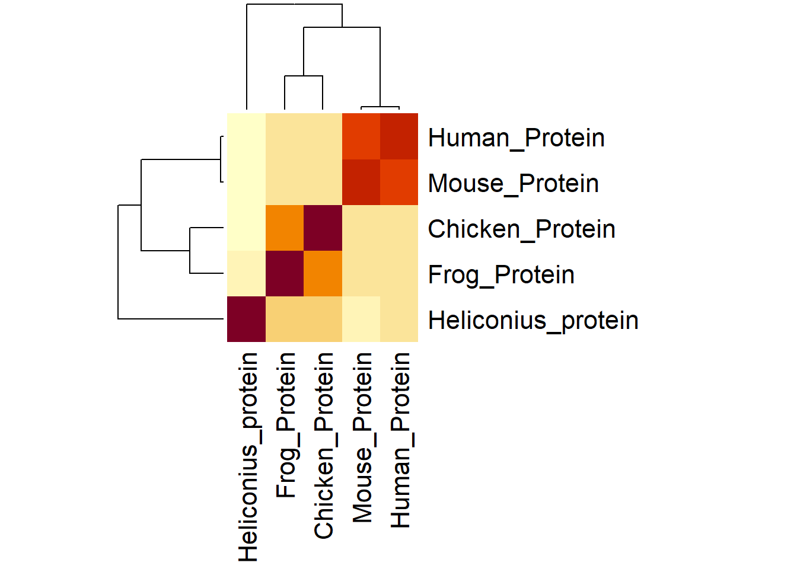

library(bio3d)Warning: package 'bio3d' was built under R version 4.4.3First we need to read our alignment data
library(bio3d)Warning: package 'bio3d' was built under R version 4.4.3alignment <- read.fasta("bag3_alignment.fasta")
head(alignment)$id
[1] "Heliconius_protein" "Human_Protein" "Mouse_Protein"
[4] "Frog_Protein" "Chicken_Protein"
$ali
[,1] [,2] [,3] [,4] [,5] [,6] [,7] [,8] [,9] [,10] [,11]
Heliconius_protein "L" "M" "T" "D" "V" "E" "N" "F" "T" "G" "A"
Human_Protein "L" "E" "Q" "A" "V" "D" "N" "F" "E" "G" "K"
Mouse_Protein "L" "E" "Q" "A" "V" "D" "S" "F" "E" "G" "K"
Frog_Protein "L" "E" "R" "E" "V" "D" "E" "F" "V" "G" "R"
Chicken_Protein "L" "E" "Q" "E" "V" "D" "E" "F" "V" "G" "K"
[,12] [,13] [,14] [,15] [,16] [,17] [,18] [,19] [,20] [,21]
Heliconius_protein "K" "N" "D" "K" "R" "Y" "L" "Y" "L" "D"
Human_Protein "K" "T" "D" "K" "K" "Y" "L" "M" "I" "E"
Mouse_Protein "K" "T" "D" "K" "K" "Y" "L" "M" "I" "E"
Frog_Protein "K" "T" "D" "M" "S" "Y" "R" "Y" "L" "E"
Chicken_Protein "K" "T" "D" "K" "S" "Y" "R" "L" "L" "E"
[,22] [,23] [,24] [,25] [,26] [,27] [,28] [,29] [,30] [,31]
Heliconius_protein "E" "M" "L" "T" "R" "N" "L" "I" "K" "L"
Human_Protein "E" "Y" "L" "T" "K" "E" "L" "L" "A" "L"
Mouse_Protein "E" "Y" "L" "T" "K" "E" "L" "L" "A" "L"
Frog_Protein "E" "L" "L" "T" "K" "Q" "L" "L" "E" "L"
Chicken_Protein "E" "M" "L" "T" "K" "L" "L" "L" "E" "L"
[,32] [,33] [,34] [,35] [,36] [,37] [,38] [,39] [,40] [,41]
Heliconius_protein "D" "N" "I" "E" "T" "D" "G" "K" "E" "N"
Human_Protein "D" "S" "V" "D" "P" "E" "G" "R" "A" "D"
Mouse_Protein "D" "S" "V" "D" "P" "E" "G" "R" "A" "D"
Frog_Protein "D" "S" "V" "E" "T" "G" "G" "Q" "D" "N"
Chicken_Protein "D" "S" "I" "E" "T" "G" "G" "Q" "D" "G"
[,42] [,43] [,44] [,45] [,46] [,47] [,48] [,49] [,50] [,51]
Heliconius_protein "I" "R" "Q" "A" "R" "K" "E" "A" "I" "K"
Human_Protein "V" "R" "Q" "A" "R" "R" "D" "G" "V" "R"
Mouse_Protein "V" "R" "Q" "A" "R" "R" "D" "G" "V" "R"
Frog_Protein "I" "R" "Q" "A" "R" "K" "E" "A" "V" "N"
Chicken_Protein "V" "R" "Q" "A" "R" "K" "E" "A" "V" "H"
[,52] [,53] [,54] [,55] [,56] [,57] [,58] [,59] [,60] [,61]
Heliconius_protein "C" "I" "Q" "K" "C" "I" "A" "V" "L" "E"
Human_Protein "K" "V" "Q" "T" "I" "L" "E" "K" "L" "E"
Mouse_Protein "K" "V" "Q" "T" "I" "L" "E" "K" "L" "E"
Frog_Protein "K" "L" "Q" "S" "I" "L" "E" "R" "L" "E"
Chicken_Protein "R" "I" "Q" "A" "I" "L" "E" "K" "L" "E"
[,62] [,63] [,64] [,65]
Heliconius_protein "A" "K" "A" "E"
Human_Protein "Q" "K" "A" "I"
Mouse_Protein "Q" "K" "A" "I"
Frog_Protein "R" "K" "G" "F"
Chicken_Protein "R" "K" "G" "L"
$call
read.fasta(file = "bag3_alignment.fasta")alignment.mat <- seqidentity(alignment$ali)
alignment.mat Heliconius_protein Human_Protein Mouse_Protein Frog_Protein
Heliconius_protein 1.000 0.400 0.385 0.477
Human_Protein 0.400 1.000 0.985 0.538
Mouse_Protein 0.385 0.985 1.000 0.538
Frog_Protein 0.477 0.538 0.538 1.000
Chicken_Protein 0.492 0.585 0.585 0.769
Chicken_Protein
Heliconius_protein 0.492
Human_Protein 0.585
Mouse_Protein 0.585
Frog_Protein 0.769
Chicken_Protein 1.000heatmap(alignment.mat,
margins = c(12,14)
)
rowMeans(alignment.mat)Heliconius_protein Human_Protein Mouse_Protein Frog_Protein
0.5508 0.7016 0.6986 0.6644
Chicken_Protein
0.6862 query.seq <- alignment$ali["Human_Protein", ]
query.seq <- paste(query.seq, collapse = "")
query.seq[1] "LEQAVDNFEGKKTDKKYLMIEEYLTKELLALDSVDPEGRADVRQARRDGVRKVQTILEKLEQKAI"blast_humanalignment <- blast.pdb(query.seq) Searching ... please wait (updates every 5 seconds) RID = TYPMX82D014
.................................................................
Reporting 6 hitshead(blast_humanalignment)$hit.tbl
queryid subjectids identity alignmentlength mismatches gapopens q.start
1 Query_3271775 1UK5_A 98.438 64 1 0 1
2 Query_3271775 1M62_A 61.538 65 25 0 1
3 Query_3271775 1M7K_A 62.500 64 24 0 1
4 Query_3271775 3A8Y_C 50.000 60 30 0 5
5 Query_3271775 1UGO_A 42.188 64 37 0 1
6 Query_3271775 1UA4_A 38.462 39 22 1 18
q.end s.start s.end evalue bitscore positives mlog.evalue pdb.id acc
1 64 42 105 5.38e-40 128.0 100.00 90.4207153 1UK5_A 1UK5_A
2 65 23 87 2.18e-20 77.8 76.92 45.2723770 1M62_A 1M62_A
3 64 36 99 4.35e-20 77.4 76.56 44.5815260 1M7K_A 1M7K_A
4 64 50 109 7.03e-14 62.8 70.00 30.2860046 3A8Y_C 3A8Y_C
5 64 30 93 4.83e-11 54.7 64.06 23.7535896 1UGO_A 1UGO_A
6 54 302 340 2.00e+00 27.3 64.10 -0.6931472 1UA4_A 1UA4_A
$raw
queryid subjectids identity alignmentlength mismatches gapopens q.start
1 Query_3271775 1UK5_A 98.438 64 1 0 1
2 Query_3271775 1M62_A 61.538 65 25 0 1
3 Query_3271775 1M7K_A 62.500 64 24 0 1
4 Query_3271775 3A8Y_C 50.000 60 30 0 5
5 Query_3271775 1UGO_A 42.188 64 37 0 1
6 Query_3271775 1UA4_A 38.462 39 22 1 18
q.end s.start s.end evalue bitscore positives
1 64 42 105 5.38e-40 128.0 100.00
2 65 23 87 2.18e-20 77.8 76.92
3 64 36 99 4.35e-20 77.4 76.56
4 64 50 109 7.03e-14 62.8 70.00
5 64 30 93 4.83e-11 54.7 64.06
6 54 302 340 2.00e+00 27.3 64.10
$url
TYPMX82D014
"https://blast.ncbi.nlm.nih.gov/Blast.cgi?CMD=Get&FORMAT_OBJECT=Alignment&ALIGNMENT_VIEW=Tabular&RESULTS_FILE=on&FORMAT_TYPE=CSV&ALIGNMENTS=20000&DESCRIPTIONS=20000&RID=TYPMX82D014" str(blast_humanalignment)List of 3
$ hit.tbl:'data.frame': 6 obs. of 16 variables:
..$ queryid : chr [1:6] "Query_3271775" "Query_3271775" "Query_3271775" "Query_3271775" ...
..$ subjectids : chr [1:6] "1UK5_A" "1M62_A" "1M7K_A" "3A8Y_C" ...
..$ identity : num [1:6] 98.4 61.5 62.5 50 42.2 ...
..$ alignmentlength: int [1:6] 64 65 64 60 64 39
..$ mismatches : int [1:6] 1 25 24 30 37 22
..$ gapopens : int [1:6] 0 0 0 0 0 1
..$ q.start : int [1:6] 1 1 1 5 1 18
..$ q.end : int [1:6] 64 65 64 64 64 54
..$ s.start : int [1:6] 42 23 36 50 30 302
..$ s.end : int [1:6] 105 87 99 109 93 340
..$ evalue : num [1:6] 5.38e-40 2.18e-20 4.35e-20 7.03e-14 4.83e-11 ...
..$ bitscore : num [1:6] 128 77.8 77.4 62.8 54.7 27.3
..$ positives : num [1:6] 100 76.9 76.6 70 64.1 ...
..$ mlog.evalue : num [1:6] 90.4 45.3 44.6 30.3 23.8 ...
..$ pdb.id : chr [1:6] "1UK5_A" "1M62_A" "1M7K_A" "3A8Y_C" ...
..$ acc : chr [1:6] "1UK5_A" "1M62_A" "1M7K_A" "3A8Y_C" ...
$ raw :'data.frame': 6 obs. of 13 variables:
..$ queryid : chr [1:6] "Query_3271775" "Query_3271775" "Query_3271775" "Query_3271775" ...
..$ subjectids : chr [1:6] "1UK5_A" "1M62_A" "1M7K_A" "3A8Y_C" ...
..$ identity : num [1:6] 98.4 61.5 62.5 50 42.2 ...
..$ alignmentlength: int [1:6] 64 65 64 60 64 39
..$ mismatches : int [1:6] 1 25 24 30 37 22
..$ gapopens : int [1:6] 0 0 0 0 0 1
..$ q.start : int [1:6] 1 1 1 5 1 18
..$ q.end : int [1:6] 64 65 64 64 64 54
..$ s.start : int [1:6] 42 23 36 50 30 302
..$ s.end : int [1:6] 105 87 99 109 93 340
..$ evalue : num [1:6] 5.38e-40 2.18e-20 4.35e-20 7.03e-14 4.83e-11 ...
..$ bitscore : num [1:6] 128 77.8 77.4 62.8 54.7 27.3
..$ positives : num [1:6] 100 76.9 76.6 70 64.1 ...
$ url : Named chr "https://blast.ncbi.nlm.nih.gov/Blast.cgi?CMD=Get&FORMAT_OBJECT=Alignment&ALIGNMENT_VIEW=Tabular&RESULTS_FILE=on"| __truncated__
..- attr(*, "names")= chr "TYPMX82D014"
- attr(*, "class")= chr "blast"hits <- blast_humanalignment$hit.tbl
head(hits) queryid subjectids identity alignmentlength mismatches gapopens q.start
1 Query_3271775 1UK5_A 98.438 64 1 0 1
2 Query_3271775 1M62_A 61.538 65 25 0 1
3 Query_3271775 1M7K_A 62.500 64 24 0 1
4 Query_3271775 3A8Y_C 50.000 60 30 0 5
5 Query_3271775 1UGO_A 42.188 64 37 0 1
6 Query_3271775 1UA4_A 38.462 39 22 1 18
q.end s.start s.end evalue bitscore positives mlog.evalue pdb.id acc
1 64 42 105 5.38e-40 128.0 100.00 90.4207153 1UK5_A 1UK5_A
2 65 23 87 2.18e-20 77.8 76.92 45.2723770 1M62_A 1M62_A
3 64 36 99 4.35e-20 77.4 76.56 44.5815260 1M7K_A 1M7K_A
4 64 50 109 7.03e-14 62.8 70.00 30.2860046 3A8Y_C 3A8Y_C
5 64 30 93 4.83e-11 54.7 64.06 23.7535896 1UGO_A 1UGO_A
6 54 302 340 2.00e+00 27.3 64.10 -0.6931472 1UA4_A 1UA4_Ahits$pdb.id <- sub("_.*$", "", hits$subjectids)unique(hits$pdb.id)[1] "1UK5" "1M62" "1M7K" "3A8Y" "1UGO" "1UA4"unique_hits <- hits[!duplicated(hits$pdb.id), ]top3 <- unique_hits[1:3, ]
top3[, c("pdb.id", "identity", "evalue")] pdb.id identity evalue
1 1UK5 98.438 5.38e-40
2 1M62 61.538 2.18e-20
3 1M7K 62.500 4.35e-20pdb_info <- pdb.annotate(top3$pdb.id)
pdb_info[, c("structureId", "experimentalTechnique", "resolution", "source")] structureId experimentalTechnique resolution source
1UK5_A 1UK5 NMR NA Mus musculus
1M62_A 1M62 NMR NA Homo sapiens
1M7K_A 1M7K NMR NA Homo sapiensfinal_table <- data.frame(
PDB_ID = top3$pdb.id,
Identity = top3$identity,
Evalue = top3$evalue,
Method = pdb_info$experimentalTechnique,
Resolution = pdb_info$resolution,
Source = pdb_info$source
)
final_table PDB_ID Identity Evalue Method Resolution Source
1 1UK5 98.438 5.38e-40 NMR NA Mus musculus
2 1M62 61.538 2.18e-20 NMR NA Homo sapiens
3 1M7K 62.500 4.35e-20 NMR NA Homo sapienswrite.csv(final_table, "Q8_PDB_table.csv", row.names = FALSE)